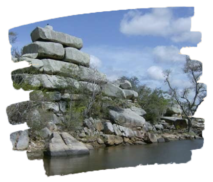

A história do Cariri é rica e complexa, marcada por influências indígenas, colonizadoras e pela fé popular. A região, que compreende cidades como Juazeiro do Norte, Crato e Barbalha, possui um passado fascinante que moldou sua identidade cultural.
Antes da chegada dos europeus, o território do Cariri era habitado por diversas etnias indígenas, como os Cariri, Tremembés e Jenipapos. Esses povos viviam em harmonia com a natureza, desenvolvendo uma cultura rica em tradições e conhecimentos sobre a região.
O relevo do Cariri é predominantemente plano, com chapadas e serras que se destacam na paisagem. Os solos são, em sua maioria, rasos e pedregosos, o que dificulta a agricultura. A vegetação predominante é a Caatinga, um bioma adaptado às condições semiáridas, com árvores de porte baixo, arbustos e cactos.

O Cariri é uma região de contrastes, marcada pela beleza de suas paisagens e pela força de seu povo. A adaptação às condições climáticas adversas moldou a cultura e a economia da região. A preservação do meio ambiente e o desenvolvimento sustentável são desafios que precisam ser enfrentados para garantir a qualidade de vida das futuras gerações.